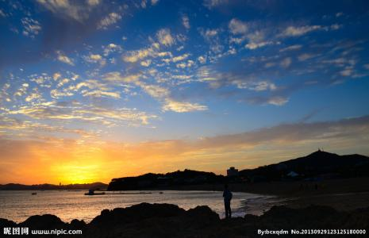
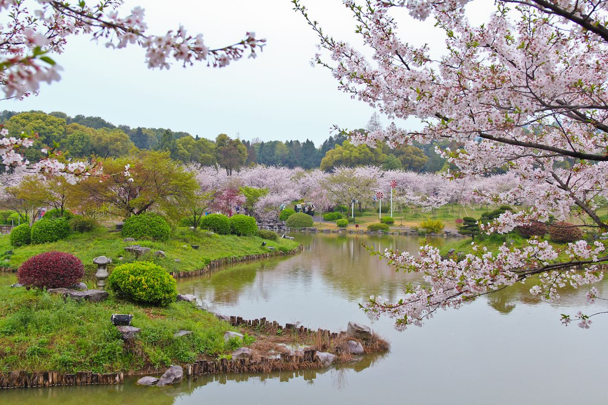

<!--
  Generated template for the Home1 page.

  See http://ionicframework.com/docs/components/#navigation for more info on
  Ionic pages and navigation.
-->
<ion-header>

  <ion-navbar>
    <ion-title>home1</ion-title>    
  </ion-navbar>

</ion-header>
<ion-content padding>
  <ion-list>
    <ion-item width="50px" height="50px"  *ngFor="let user of member" (click)=itemClick()>
      <ion-avatar item-left class="" *ngIf="user.id==1" >
         
      </ion-avatar> 
       <ion-avatar item-left *ngIf="user.id==2">
        
      </ion-avatar>  
      <ion-avatar item-left *ngIf="user.id==3">
        
      </ion-avatar> 
       <ion-avatar item-left *ngIf="user.id==4">
        
      </ion-avatar>  
      <ion-avatar item-left *ngIf="user.id==5">
        
      </ion-avatar> 
      <br>
      <H2><b>景区编号:{{user.id}}</b></H2> <h3><b>景区名称:{{user.name}}</b></h3>
      <h3>景区电话：{{user.tel}} </h3> 
    </ion-item>
  </ion-list>

  <button ion-button full color="secondary" (click)=presentActionSheet()>排序</button> 
</ion-content>
